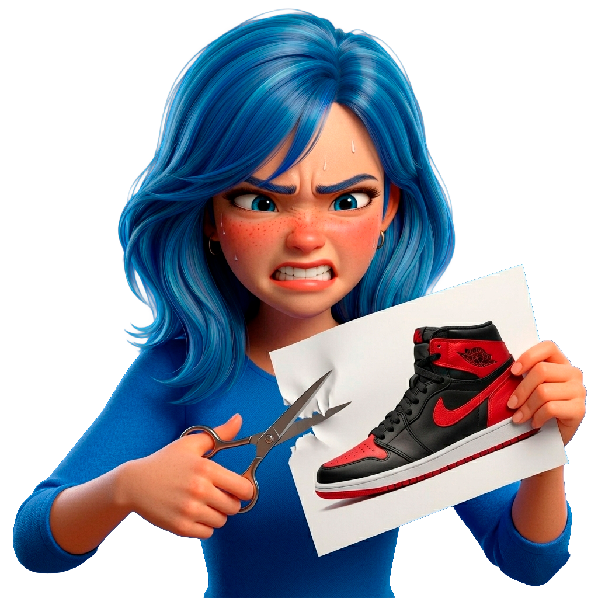

AutoRAW автоматизирует обработку товарных снимков по референсу или по технологии «Zona» — красные маркёры заменяют ручную обрезку сотен файлов.
Инструменты, которые превращают часы ручной обработки в минуты автоматики

Собственная разработка AutoRAW: рядом с каждым исходником лежит маркёрное фото с красной рамкой вокруг нужной области. Алгоритм детектирует контур, вычисляет геометрию с учётом поворота и точно вырезает кадр.
zona/ — снимок с красной рамкой с тем же именем.ZONA — нейросеть, которая сама понимает контекст. Она чувствует, когда пакет готов, когда что-то пошло не так, когда работа остановлена — и каждый раз отвечает своими словами, без шаблонов.
Закройте ноутбук — ZONA сообщит о результате сама
Зрелый стек без лишних зависимостей
Скачайте установщик — .NET установится автоматически при необходимости